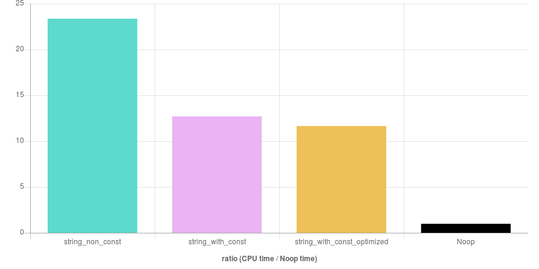

const int i = std::rand() % 3;
std::string s;
switch (i) {
case 1: s = "The number you selected is odd"; break;
case 2: s = "The number you selected is even"; break;
case 0: s = "The number you selected is zero"; break;
}
const int i = std::rand() % 3;
const std::string s = [i]() {
switch (i) {
case 1: return "The number you selected is odd";
case 2: return "The number you selected is even";
default: return "The number you selected is zero";
}
}();
const int i = std::rand() % 3;
const std::string s = [i]() -> std::string {
switch (i) {
case 1: return "The number you selected is odd";
case 2: return "The number you selected is even";
default: return "The number you selected is zero";
}
}();
